ça pousse !
En quinze ans, beaucoup de beaux projets ont vu le jour, mais également de nombreux édifices ont été batis. Eux aussi ont beaucoup contribué à la floraison Brestoise !
Quelques photos de Brest :
10 éclosions
Brest se transforme et avec elle, de grands projets se développent. Précurseur de la métamorphose Brestoise, le multiplexe Liberté fut le premier projet à sortir des terres Bretonnes en 2005. L’inauguration du tramway en 2012, longtemps plébiscité par les habitants, est le plus grand projet d’entre eux. Par la suite, les aménagements se suivent mais ne se ressemblent pas : le port, l’aéroport, le polder, la réhabiliation de Pontanézen, Brest Arena, le téléphérique, la Carène et enfin la zone du Froutven. Tous ces projets, étendus sur un quart de siècle, font de Brest une métropole d’envergure.
quartiers
Deux tiers des bâtiments construits entre 2000 et 2015 sur le territoire de Brest Métropole l’ont été dans les communes de la première couronne. Le Relecq-Kerhuon et Plougastel-Daoulas caracolent en tête des territoires les plus fertiles du siècle. Ce qui démontre bien, si cela était encore nécessaire, une lourde tendance à l’étalement urbain. Et à Brest mêm’, comme on dit dans le coin ? Le changement se concentre toujours sur les exté- rieurs avec comme principales métamorphoses : La Cavale-Blanche, Saint-Pierre, Kergaradec et Bellevue. A noter que les trois quartiers qui ont le moins évolué sur la période sont le Bouguen, Kerinou et le Centre-Siam.